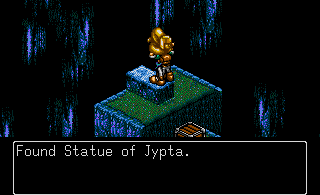
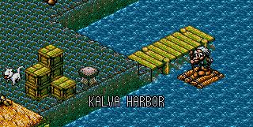
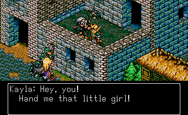
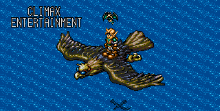
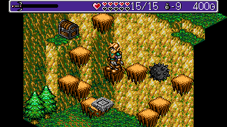
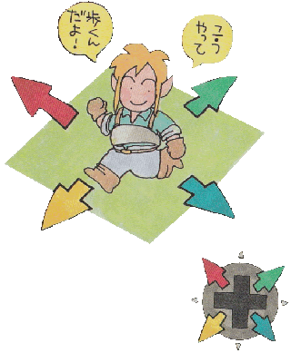
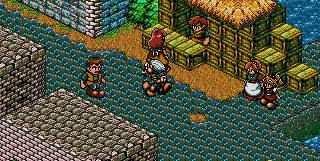

GAMUL DATE 312. Что бы это могло значить? Скорей всего, это дата - триста двенадцатый год. А что такое GAMUL? Даже для меня это до сих пор остаётся загадкой. Если же обратиться к датам нашего мира, то игра вышла в свет 30 октября 1992 года, из под крыла небезызвестной компании Climax Entertainment.
События игры получают своё начало в развалинах древнего города Jypta. Главный герой игры, лесной эльф по имени Найджел, исследует это место в поисках чем бы поживиться. Вором Найджела не назовёшь, но сюда он пришёл, чтобы забрать всё что плохо лежит. Найджел является охотником за сокровищами.

Найджел (Nigel), Ryle в оригинале (Япония) и во Франции, в немецкой версии - Niels, находит древнюю статуэтку Statue of Jypta, после чего отправляется в город Kalva. Да, у нас имеются региональные различия этой игры, которые заключаются в разных вариациях названий и имён. Но мы будем опираться на всемирную версию, где Ryle в паспортном столе "Ведь и без того мало путаницы в играх" поменял имя на Nigel.

В городе Kalva у Найджела происходит встреча с покупателем - стариком, который прибывает в город на плоту. После разговора с Найджелом, в котором старик отмечает способности первого, тот с радостью покупает Statue of Jypta за 2.000 золотых. В момент, когда старик делится тем, что завидует Найджелу и его приключениям, последнему что-то попадает в глаз...

Ну, это если судить по кат-сцене... но, наверное, она запорхнула в рюкзак на спине Найджела.
Да, "она" - потому что это девочка. И даже не фея, а лесная нимфа!
Зовут твою новую вайфу - Фрайди (Friday). "Пятница" запрыгнула на Найджела не от хорошей жизни -
за ней гналась компания из двух "M" и одной "S" (Весь мир делится на что? Правильно).
Девушка с хлыстом, возглавляющая сей поход против ведьм нимф, требует у Найджела,
чтобы тот выдал ей девчонку. Вторую твою новую вайфу зовут Кайла (Kayla).

Причиной этих разборок стало то, что Фрайди знает, где спрятаны легендарные сокровища Короля Нола (King Nole), вот только не хочет делиться этой информацией с данной троицей. Когда Найджел услышал о сокровищах, то чисто из "джентльменских" побуждений решил впрячься за свою новую знакомую. Бедняжка так была напугана, что сказала Найджелу, что чтобы заставить её говорить, эти трое могут сделать с ней всё что угодно, и даже убить! Конечно это заставит её говорить, а как иначе?

Пока Найджел воображал кучу сокровищ, которую ему сулит это приключение, наша троица разбойников уже поднималась на второй этаж к нему и Фрайди. Нимфа не растерялась и попросила Найджела быстрее шевелить булками. Вместе они скрываются от преследователей за углом дома, и те пробегают мимо них, тем самым вырываясь вперёд в этой гонке за сокровищами. Найджел и Фрайди наконец представляются друг другу по имени, после чего Фрайди просит Найджела следовать за собой. На что тот отвечает, что он не ведомый. То есть доминировать в их паре будет он. Вот так видится сюжет детской игры, когда ты двадцатилетний парень с кучей фигни в голове...

Наша парочка берёт билет в один конец в виде здоровенной птицы, которая опустошила карманы Найджела, ведь обошлась ему в 2.000 золотых. Оказалось, что сокровища спрятаны где-то в недрах острова, который находится вдали от основого Континента. Корабль ходит туда раз в месяц, но у Найджела не было времени, чтобы ждать. По правде говоря, Фрайди не знает точное месторасположение сокровищ, поэтому Найджелу остаётся надеяться на своё внутреннее чутьё на сокровища.

По прибытии на остров, Найджел спрыгивает с птицы на землю, и после непродолжительного разговора Фрайди говорит фразу "Now, let's start our adventure!!". И это вполне заслуженно. Играющего ждёт интересное путешествие по острову, полному различных монстров и опасностей! Вам предстоит побывать не в одном подземельи и не в одном городе. Потрясающая история о спасении принцессы (да, такое бывает), о предательстве и о поиске сокровищ! Несколько вариантов экипировки, каждый со своими уникальными свойствами. И даже целых три, но зато каких сайд-квеста!
Потрясающая музыка от Мотоаки Такэноучи (Motoaki Takenouchi), которая до сих пор играет в моём плейлисте, дополняет эту прекрасную игру, которую я не перестаю любить вот уже больше десяти лет! И если хотя бы одному человеку я помогу решиться на то, чтобы дать этой игре шанс, то значит всё это было не напрасно...

Без труда не выловишь и рыбку из пруда. Играющему предстоит пройти небольшой период адаптации. Дело в том, что игра представлена в изометрической проекции. Это выливается в не совсем привычное управление, ведь ходить придётся по диагоналям. Также, благодаря изометрической проекции, в редких случаях становится не совсем понятно, находится ли ближе или дальше та платформа, на которую нужно совершить прыжок. Хоть и вся игра построена на платформинге, таких мест - единицы.

Чтобы передвигаться по миру этой игры, необходимо зажать две стрелочки. Например, чтобы идти влево-вверх, нужно зажать стрелочку "влево" и стрелочку "вверх". Всё оказалось проще чем ты думал, правда?
Помимо стрелочек, в игре задействовано всего две клавиши: "A" для удара и "B" для прыжка. Также для удара можно использовать клавишу "C", тогда удар и прыжок "поменяются местами". Смотри сам, как тебе будет удобнее ;)
Да, мир Лэндсталкера не так уж сильно отличается от остальных игр, которые используют фэнтезийный сеттинг. И, конечно, он не идеален... Но эта милая чиби-графика, наряду с великолепной музыкой и интересными событиями, которые не оставят тебя равнодушным, - заставляют влюбиться в эту игру!

И от того больнее осознавать, что продолжения нет... и не будет. Да, история рассказана, но хочется ещё. Мы так и не увидим Континент, ведь всё действие игры происходит на удалённом от него острове. Всё, что мы видели, - маленький кусочек города Kalva - и то только в открывающей заставке. Если забегать вперёд, то я пробовал применить Game Genie - коллизии там нет, тайлов за пределами того, что мы видим, - тоже. Иначе и быть не могло. Показывать это я не буду. Не люблю, когда рушится иллюзия того, что мир игры настоящий.